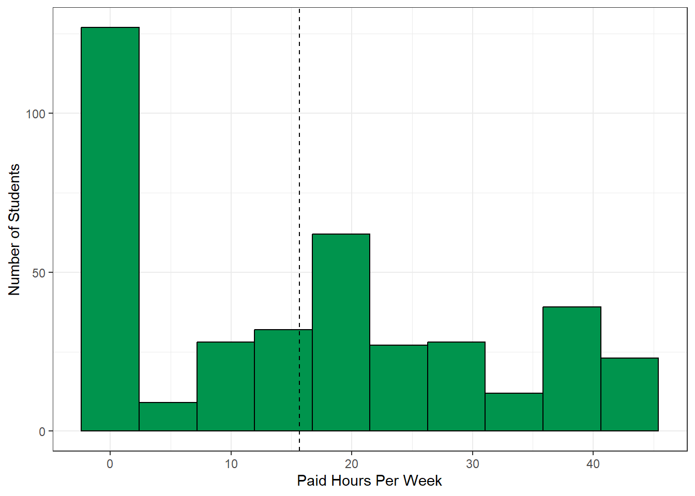
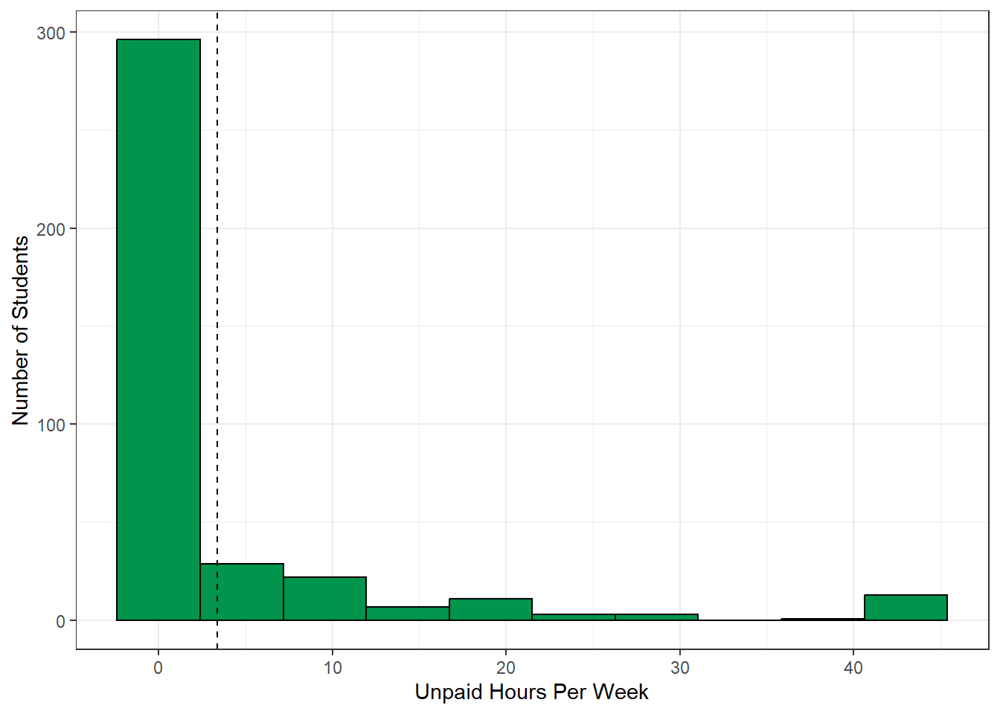
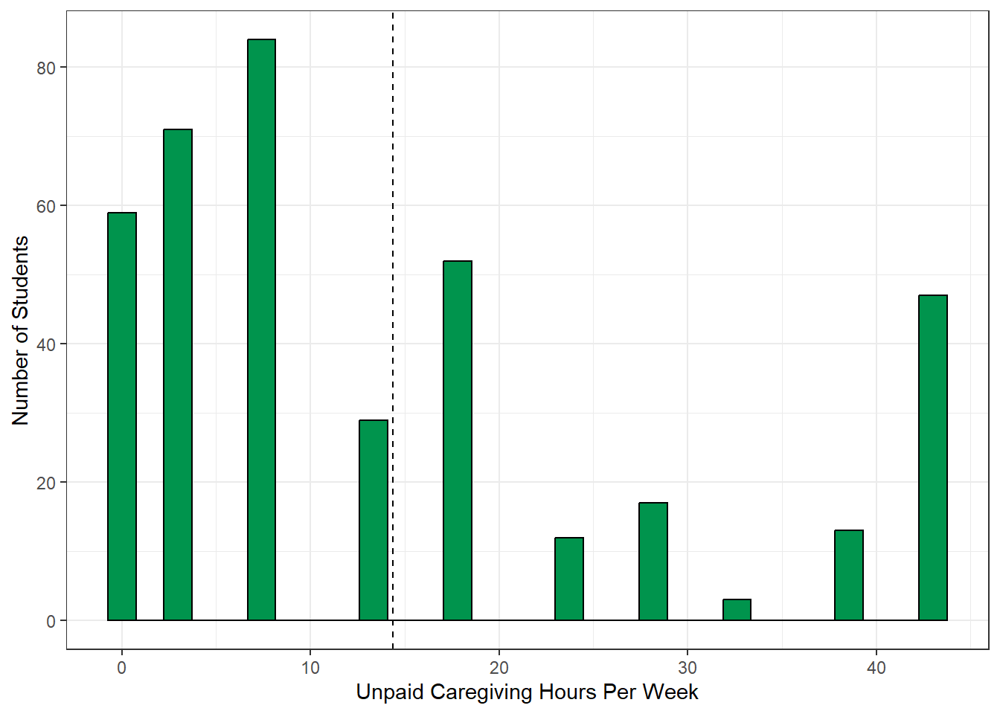
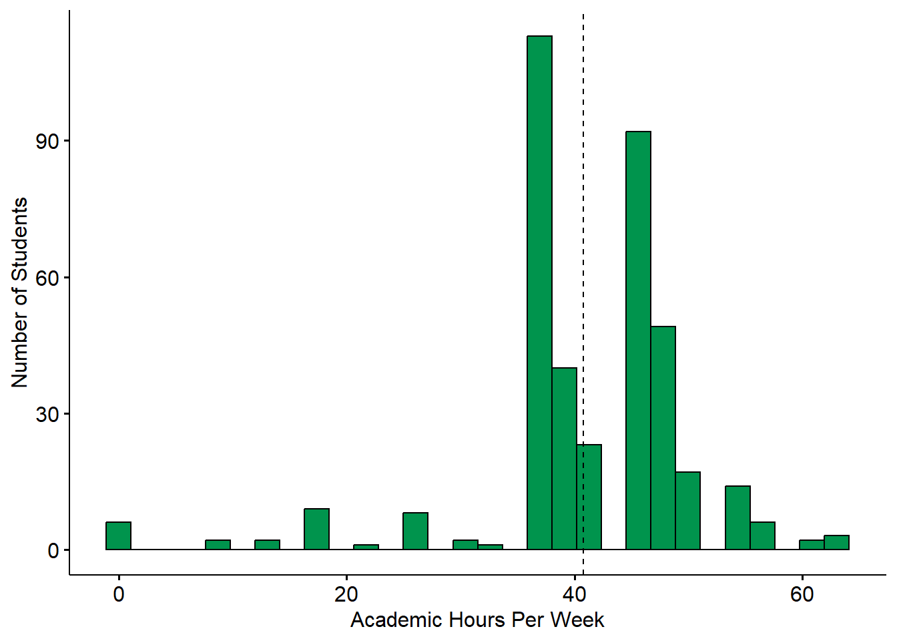
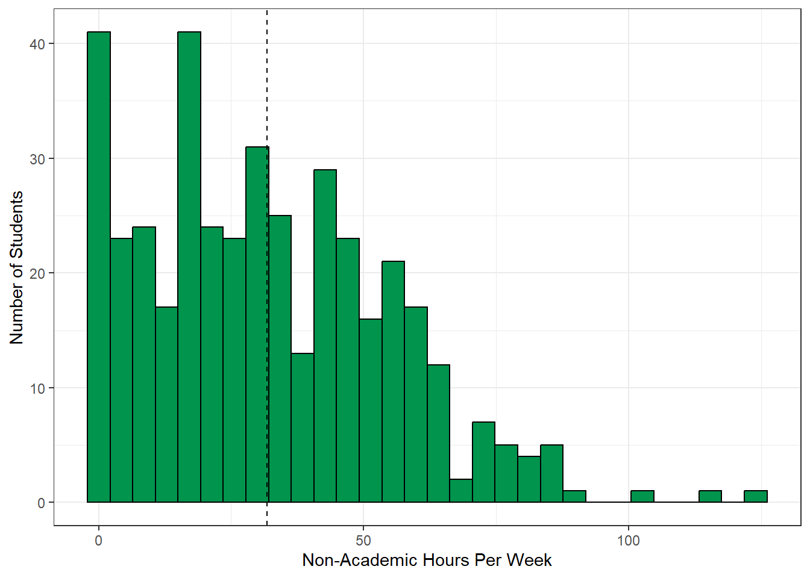
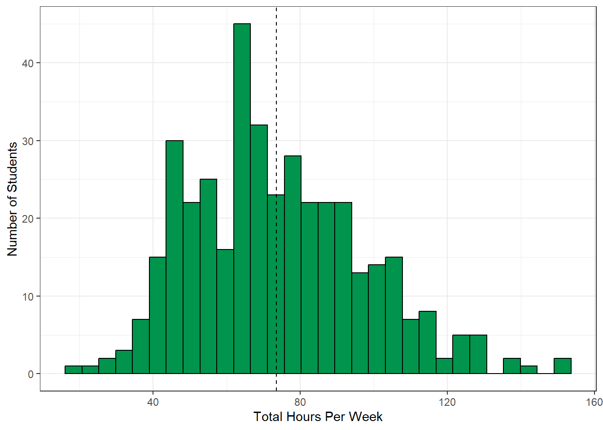

── Attaching core tidyverse packages ──────────────────────── tidyverse 2.0.0 ──
✔ dplyr 1.1.4 ✔ readr 2.1.5
✔ forcats 1.0.0 ✔ stringr 1.5.1
✔ ggplot2 3.5.1 ✔ tibble 3.2.1
✔ lubridate 1.9.3 ✔ tidyr 1.3.1
✔ purrr 1.0.2
── Conflicts ────────────────────────────────────────── tidyverse_conflicts() ──
✖ dplyr::filter() masks stats::filter()
✖ dplyr::lag() masks stats::lag()
ℹ Use the conflicted package (<http://conflicted.r-lib.org/>) to force all conflicts to become errors
library(knitr)library(sjPlot)
#refugeeswelcome
library(kableExtra)
Warning: package 'kableExtra' was built under R version 4.4.3
Attaching package: 'kableExtra'
The following object is masked from 'package:dplyr':
group_rows
library(questionr)
Warning: package 'questionr' was built under R version 4.4.3
library(gridExtra)
Attaching package: 'gridExtra'
The following object is masked from 'package:dplyr':
combine
library(ggpubr) library(scales)
Attaching package: 'scales'
The following object is masked from 'package:purrr':
discard
The following object is masked from 'package:readr':
col_factor
print_n_reporting <-function(x) { paste0("(n=", sum(!is.na(BNSp2b[[x]])), ", ", percent(mean(!is.na(BNSp2b[[x]])), accuracy=1), " of ", nrow(BNSp2b), " reporting)" )}# Print number of respondentsprint_n <-function(x) { paste0("(n = ", sum(!is.na(BNSp2b[[x]])), ")")}
load("C:/Users/asbhalerao/OneDrive - California State University Chico/Desktop/CHC/Practice website/BNSp2_clean.Rdata")sjPlot::set_theme(base =theme_bw())
Students were asked to report information regarding their workload. This includes work from both paid/unpaid jobs, academic work, as well as time spent caregiving for any family members.
BNSp2b <- BNSp2b %>%mutate(paid_work_hours_clean =case_when(str_detect(paid_work_hours, "^[0-9]+$") ~as.numeric(paid_work_hours),str_detect(paid_work_hours, "^[0-9]+\\s*[-–]\\s*[0-9]+$") ~ (rowMeans(str_split_fixed(paid_work_hours, "[-–]", 2) %>%as.data.frame() %>%mutate_all(as.numeric) ) ), paid_work_hours =="41+"~43, # or 45 depending on your assumptionTRUE~NA_real_ ) )
Warning: There were 2 warnings in `mutate()`.
The first warning was:
ℹ In argument: `paid_work_hours_clean = case_when(...)`.
Caused by warning:
! NAs introduced by coercion
ℹ Run `dplyr::last_dplyr_warnings()` to see the 1 remaining warning.
gghistogram( BNSp2b,x ="paid_work_hours_clean",add ="mean",fill ="#00944d",alpha =1,bins =10) +xlab("Paid Hours Per Week") +ylab("Number of Students") +theme_bw()
Warning: `geom_vline()`: Ignoring `mapping` because `xintercept` was provided.
Warning: `geom_vline()`: Ignoring `data` because `xintercept` was provided.
Warning: Removed 20 rows containing non-finite outside the scale range
(`stat_bin()`).

sum(is.na(BNSp2b$paid_work_hours_clean))
[1] 20
Survey Question:Estimate the number of hours you work in a PAID job (e.g. server at a restaurant, office assistant, etc.) or paid internship (e.g. training, shadowing, or practicum) per week.
Summary: Students reported a wide range of paid work hours per week with an average of NA hours (denoted by the dotted line) and a median of 16-20. The majority of students worked either part-time or not at all. Only 51 (13.2%) students were considered to be working full-time (40 or more hours per week).
Figure 3.1. Impact of COVID (n=366, 90% of 407 reporting).
Survey Question:Have the hours you work in a PAID job or internship changed due to COVID-19?
Summary: A total of 73 (19.9%) students reported not working prior to COVID, while 87 (23.8%) reported that their hours have not changed due to COVID. There were 108 (29.5%) students that had their hours decreased, 68 (18.6%) that no longer had a job/internship, and 30 (8.2%) that had their hours increased.
Unpaid Work Hours
BNSp2b <- BNSp2b %>%mutate(unpaid_work_hours_clean =case_when(str_detect(unpaid_work_hours, "^[0-9]+$") ~as.numeric(unpaid_work_hours),str_detect(unpaid_work_hours, "^[0-9]+\\s*[-–]\\s*[0-9]+$") ~ (rowMeans(str_split_fixed(unpaid_work_hours, "[-–]", 2) %>%as.data.frame() %>%mutate_all(as.numeric) ) ), unpaid_work_hours =="41+"~43, # or 45 depending on your assumptionTRUE~NA_real_ ) )
Warning: There were 2 warnings in `mutate()`.
The first warning was:
ℹ In argument: `unpaid_work_hours_clean = case_when(...)`.
Caused by warning:
! NAs introduced by coercion
ℹ Run `dplyr::last_dplyr_warnings()` to see the 1 remaining warning.
gghistogram( BNSp2b %>%filter(!is.na(unpaid_work_hours_clean)),x ="unpaid_work_hours_clean",add ="mean",fill ="#00944d",alpha =1,bins =10) +xlab("Unpaid Hours Per Week") +ylab("Number of Students") +theme_bw()
Warning: `geom_vline()`: Ignoring `mapping` because `xintercept` was provided.
Warning: `geom_vline()`: Ignoring `data` because `xintercept` was provided.

Survey Question:Estimate the number of hours you work in an UNPAID internship (e.g. training, shadowing, practicum, and/or volunteer, etc.) per week. Do not combine with answers above.
Summary: The average number of unpaid work hours was NA (denoted by the dotted line) and the median was 0. A total of 296 (76.9%) students did not work at an unpaid job/internship, while 60 (15.6%) students reported working 10 or more unpaid hours every week.
Warning: There were 2 warnings in `mutate()`.
The first warning was:
ℹ In argument: `caregiving_hours_clean = case_when(...)`.
Caused by warning:
! NAs introduced by coercion
ℹ Run `dplyr::last_dplyr_warnings()` to see the 1 remaining warning.
gghistogram( BNSp2b %>%filter(!is.na(caregiving_hours_clean)),x ="caregiving_hours_clean",add ="mean",fill ="#00944d",alpha =1,bins =30) +xlab("Unpaid Caregiving Hours Per Week") +ylab("Number of Students") +theme_bw()
Warning: `geom_vline()`: Ignoring `mapping` because `xintercept` was provided.
Warning: `geom_vline()`: Ignoring `data` because `xintercept` was provided.

Survey Question:Estimate the number of hours you spend each week on UNPAID family obligations (e.g. taking care of younger siblings, preparing family meals, running errands for the family, etc.) per week.
Summary: A total of 0 (NA) students spent time each week caring for family members with an average of NA hours (denoted by the dotted line) and a median of 16-20. There were 59 (15.2%) students that reported spending zero hours per week on family obligations, while 131 (33.9%) reported spending 40 or more hours each week.
Academic Workload
gghistogram(tmp2, x ="units", add ="mean", fill = plot_color, alpha =1) +xlab("Academic Hours Per Week") +ylab("Number of Students")
Warning: Using `bins = 30` by default. Pick better value with the argument
`bins`.
Warning: `geom_vline()`: Ignoring `mapping` because `xintercept` was provided.
Warning: `geom_vline()`: Ignoring `data` because `xintercept` was provided.
Warning: Removed 17 rows containing non-finite outside the scale range
(`stat_bin()`).

Figure 3.2. Academic Workload (n=393, 97% of 407 reporting).
sum(is.na(tmp2$units))
[1] 17
Survey Question:How many units are you currently taking?
Additional Notes: The hours of academic work per week were estimated by assuming 3 hours of work per unit.
Summary: The average number of academic hours worked per week was 40.8 hours (denoted by the dotted line), while the median was 42. A total of 206 (52.8%) students spent 40 or more hours per week on academic work.
gghistogram( BNSp2b %>%filter(!is.na(NonAcademic_clean)),x ="NonAcademic_clean",add ="mean",fill ="#00944d",alpha =1,bins =30) +xlab("Non-Academic Hours Per Week") +ylab("Number of Students") +theme_bw()
Warning: `geom_vline()`: Ignoring `mapping` because `xintercept` was provided.
Warning: `geom_vline()`: Ignoring `data` because `xintercept` was provided.

Survey Question:This variable was derived by taking the sum of students’ paid work hours, unpaid work hours, and caregiving hours.
Additional Notes: Non-academic workload was calculated only for students who reported their paid work hours, unpaid work hours, and caregiving hours.
Summary: The average total number of hours worked per week in non-academic matters was 0 hours (denoted by the dotted line), while the median was 0 hours. A total of 0 (0.0%) students spent 40 or more hours per week on non-academic work.
'data.frame': 407 obs. of 331 variables:
$ progress : num 100 100 100 100 100 100 100 100 100 100 ...
$ duration_in_seconds : num 1057 1864 914 1426 1037 ...
$ finished : logi TRUE TRUE TRUE TRUE TRUE TRUE ...
$ q7 : chr "Man" "Woman" "Man" "Woman" ...
$ q8 : chr "No, not Hispanic, Latino or Spanish Origin" "Yes, Mexican, Mexican American, Chicano" "Yes, Mexican, Mexican American, Chicano" "No, not Hispanic, Latino or Spanish Origin" ...
$ q10 : chr "Single, never married" "Single, never married" "Single, never married" "Married" ...
$ q11 : num 0 0 0 1 0 0 0 1 0 0 ...
$ q12_1 : num NA NA NA 15 NA NA NA 6 NA NA ...
$ q12_2 : num NA NA NA NA NA NA NA NA NA NA ...
$ q12_3 : num NA NA NA NA NA NA NA NA NA NA ...
$ q12_4 : num NA NA NA NA NA NA NA NA NA NA ...
$ q12_5 : num NA NA NA NA NA NA NA NA NA NA ...
$ q13 : chr "Other/Unknown" "Less than high school" "Less than high school" "Some college" ...
$ q14_1 : chr "No" "Yes" "No" "Yes" ...
$ q14_2 : chr "No" "No" "Yes" "No" ...
$ q14_3 : chr "No" "No" "No" "No" ...
$ q14_4 : chr "No" "No" "Yes" "Yes" ...
$ q14_5 : chr "No" "No" "No" "No" ...
$ q14_6 : chr "No" "No" "No" "No" ...
$ q14_7 : chr "No" "No" "No" "No" ...
$ q14_8 : chr "No" "No" "No" "No" ...
$ q14_9 : chr "Yes" "Yes" "No" "No" ...
$ q14_10 : chr "Yes" "Yes" "Yes" "Yes" ...
$ q14_11 : chr "Yes" "Yes" "No" "No" ...
$ q14_12 : chr "No" "No" "No" "No" ...
$ q14_13 : chr "Yes" "No" "No" "No" ...
$ q14_14 : chr "No" "No" "No" "No" ...
$ q14_15 : chr "No" "No" "No" "No" ...
$ q14_16 : chr "Yes" NA "Yes" "Yes" ...
$ q14_17 : chr "Yes" "Yes" "Yes" "Yes" ...
$ q14_18 : chr "No" "No" "No" "No" ...
$ q14_19 : chr "No" "No" "No" "No" ...
$ q14_20 : chr "Yes" "No" "No" "No" ...
$ q14_21 : chr "Yes" "No" "Yes" "No" ...
$ q14_22 : chr "No" "No" "No" "No" ...
$ q14_23 : chr "No" "No" "No" "No" ...
$ q14_24 : chr "No" "No" "No" "No" ...
$ q14_25 : chr "No" "No" "No" "No" ...
$ q14_26 : chr "No" "No" "No" "No" ...
$ q101_1 : chr "No" "No" "No" "No" ...
$ q101_2 : chr "No" "Yes" "No" "No" ...
$ q16 : chr "Public Health, Social Services, Social Science, Education" "Public Health, Social Services, Social Science, Education" "Arts and Humanities" "Business, Recreation, Culinary Services" ...
$ q16_6_text : chr NA NA NA NA ...
$ q17 : chr "2.51-3.0" "2.51-3.0" "2.01-2.5" "2.51-3.0" ...
$ q18 : num 12 9 16 15 12 15 12 12 6 13 ...
$ q19 : chr "30" "40" "40" "0" ...
$ q20 : chr "Yes, my hours have decreased but I still have a job." "No, my hours have remained the same." "Yes, my hours have decreased but I still have a job." "No, my hours have remained the same." ...
$ q21 : chr "0" "41+" NA "0" ...
$ q22 : chr "5" "41+" "41+" "41+" ...
$ q23 : chr "No" "No" "Yes" "No" ...
$ q24 : chr "Yes" "No" "No" "No" ...
$ q25 : chr "I live in a sorority or fraternity house" "I live with parents or other relatives, not paying rent with my own money" "I am temporarily living with friends or relatives, without permanent housing (couch surfing)" "I own my own home" ...
$ q25_13_text : chr NA NA NA NA ...
$ q26 : chr "Yes" "Yes" "No" "No" ...
$ q27 : chr "No" "Yes" "Yes" "Yes" ...
$ q28 : chr "No" "Yes" "Yes" "Yes" ...
$ q29 : chr "No" "Yes" "Yes" "Yes" ...
$ q30 : chr "No" "No" "Yes" "No" ...
$ q31 : chr "No" "No" "No" "No" ...
$ q32 : chr "No" "No" "No" "No" ...
$ q33 : chr "No" "No" "Yes" "No" ...
$ q34 : Factor w/ 4 levels "Never","Once",..: 1 1 1 1 1 1 3 1 NA 1 ...
$ q35 : Factor w/ 5 levels "None","Once",..: 1 4 3 1 1 4 2 1 NA 2 ...
$ q36_1 : chr "Not applicable" "Not applicable" "Not applicable" "Not applicable" ...
$ q36_2 : chr "In the last 12 months" "Not applicable" "Not applicable" "Not applicable" ...
$ q36_3 : chr "Not applicable" "Not applicable" "Not applicable" "Not applicable" ...
$ q36_4 : chr "In the last 30 days" "Not applicable" "Not applicable" "In the last 30 days" ...
$ q36_5 : chr "Not applicable" "Not applicable" "Not applicable" "Not applicable" ...
$ q36_6 : chr "Not applicable" "Not applicable" "In the last 12 months" "Not applicable" ...
$ q36_7 : chr "Not applicable" "Not applicable" "Not applicable" "Not applicable" ...
$ q36_8 : chr "Not applicable" "Not applicable" "Not applicable" "Not applicable" ...
$ q36_9 : chr "Not applicable" "Not applicable" "Not applicable" "Not applicable" ...
$ q36_10 : chr "Not applicable" "Not applicable" "Not applicable" "Not applicable" ...
$ q36_11 : chr "Not applicable" "Not applicable" "Not applicable" "Not applicable" ...
$ q36_12 : chr "Not applicable" "Not applicable" "Not applicable" "Not applicable" ...
$ q37 : chr NA NA "I did not have enough money to cover housing expenses (rent, mortgage, or utility bill)" "I did not have enough money to cover housing expenses (rent, mortgage, or utility bill)" ...
$ q37_6_text : chr NA NA NA NA ...
$ q38 : chr "Yes" "Yes" "Yes" "Yes" ...
$ q39 : chr NA NA NA NA ...
$ q40 : chr "Yes" "No" "Yes" "Yes" ...
$ q41 : chr "Yes" "Yes" "Yes" NA ...
$ q42 : chr "1 (myself)" "3 (myself plus 2)" "4 (myself plus 3)" "3 (myself plus 2)" ...
$ q44 : chr "No" "No" "No" "No" ...
$ q46_1 : Factor w/ 5 levels "Never heard of it",..: 5 2 3 4 2 3 4 5 4 3 ...
$ q46_2 : Factor w/ 5 levels "Never heard of it",..: 5 2 3 2 2 3 4 5 2 3 ...
$ q46_3 : Factor w/ 5 levels "Never heard of it",..: 2 2 1 1 1 3 1 1 1 1 ...
$ q46_4 : Factor w/ 5 levels "Never heard of it",..: 5 5 5 4 3 3 4 5 4 3 ...
$ q46_5 : Factor w/ 5 levels "Never heard of it",..: 2 2 4 2 2 2 1 4 1 1 ...
$ q47 : chr "As an individual" NA "As an individual" NA ...
$ q48 : chr "1 (myself)" NA "1 (myself)" NA ...
$ q49_1 : num 155 NA 191 NA NA 0 NA 176 NA 196 ...
$ q50 : chr "No" NA "Yes" NA ...
$ q51 : Factor w/ 4 levels "First week after receiving benefits",..: 2 NA NA NA NA 2 NA 3 NA NA ...
$ q52_1 : Factor w/ 5 levels "Strongly disagree",..: 3 NA 5 NA NA 4 NA 3 NA 3 ...
$ q52_2 : Factor w/ 5 levels "Strongly disagree",..: 3 NA 5 NA NA 3 NA 3 NA 3 ...
$ q52_3 : Factor w/ 5 levels "Strongly disagree",..: 3 NA 1 NA NA 4 NA 3 NA 3 ...
$ q52_4 : Factor w/ 5 levels "Strongly disagree",..: 3 NA 1 NA NA 4 NA 3 NA 3 ...
$ q52_5 : Factor w/ 5 levels "Strongly disagree",..: 4 NA 1 NA NA 4 NA 5 NA 2 ...
$ q52_6 : Factor w/ 5 levels "Strongly disagree",..: 5 NA 1 NA NA 4 NA 4 NA 1 ...
[list output truncated]
summary(tmp2$TotalHours)
Min. 1st Qu. Median Mean 3rd Qu. Max. NA's
20.00 56.00 70.50 73.55 88.00 153.00 17
gghistogram(tmp2, x ="TotalHours", add ="mean", fill = plot_color, alpha =1) +xlab("Total Hours Per Week") +ylab("Number of Students") +theme_bw()
Warning: Using `bins = 30` by default. Pick better value with the argument
`bins`.
Warning: `geom_vline()`: Ignoring `mapping` because `xintercept` was provided.
Warning: `geom_vline()`: Ignoring `data` because `xintercept` was provided.
Warning: Removed 17 rows containing non-finite outside the scale range
(`stat_bin()`).

Survey Question:This variable was derived by taking the sum of students’ paid work hours, unpaid work hours, caregiving hours, and hours spent from academic activities (assuming 3 hours per unit taken).
Additional Notes: Total workload was calculated only for students who reported their paid work hours, unpaid work hours, caregiving hours, and units.
Summary: The average number of total hours worked per week was 73.55 hours (denoted by the dotted line), while the median was 70.5 hours. A total of 367 (94.1%) students spent 40 or more hours per week on academic and non-academic work, while 145 (37.2%) spent 80 or more hours.
## | label: fig-student-hours## | fig-cap: CalFresh Eligibility# # # ## CalFresh Workload# # People are required to meet a certain work criteria in order to receive CalFresh benefits. All able-bodied adults are required to work a minimum of 80 hours per month, which can be broken down into roughly 20 hours per week. This can be either paid or unpaid work, and more information on this requirement can be found on the [Department of Social Services](https://www.cdss.ca.gov/inforesources/calfresh/abawd#:~:text=People%20who%20are%20ABAWDs%20must,%2C%20and%20in%2Dkind%20work.) website. If you are an student, you may be enrolled in at least 6 academic units or more (equivalent to 18+ hours per week of academic workload) rather than having a paid/unpaid job. For more information on student eligibility, see the [College Student Eligibility](https://www.csuchico.edu/calfresh/basics/college-student-eligibility.shtml) requirements on Chico State's website.# # The below graphs breaks down if a person meets the workload requirements based solely on one of the following criteria:# # - Academic workload - enrolled in 6 or more units (18 or more hours).# - Paid Workload - working 20+ weekly hours at a paid position.# - Unpaid Workload - working 20+ weekly hours at a unpaid position.# - Total Workload - working 20+ weekly hours in total (combination of academic, paid, and unpaid).# # *Note: people with a workload of 0 hours were included in the graph and analysis.*# # tmp <- tmp2# tmp <- tmp %>% mutate(student=factor(ifelse(is.na(q18), NA, # ifelse(q18 >= 6, "Eligible", "Not Eligible")),# levels=c("Not Eligible", "Eligible")),# paid=factor(ifelse(is.na(paid_work_hours), NA, # ifelse(paid_work_hours >= 20, "Eligible", "Not Eligible"))# , levels=c("Not Eligible", "Eligible")),# unpaid=factor(ifelse(is.na(unpaid_work_hours), NA, # ifelse(unpaid_work_hours >= 20, "Eligible", "Not Eligible")),# levels=c("Not Eligible", "Eligible")),# total=factor(ifelse(is.na(TotalHours), NA, # ifelse(TotalHours >= 20, "Eligible", "Not Eligible")), # levels=c("Not Eligible", "Eligible"))) %>%# select(student, paid, unpaid, total)# # names(tmp) <- c("Academic Workload", "Paid Workload", "Unpaid Workload", "Total Workload")# # plot_likert(tmp,# grid.range = c(1.4, 1.4),# wrap.legend.labels = 20,# expand.grid = FALSE,# values = "sum.outside",# catcount = 2,# geom.colors = c("#D8B365","#5AB4AC"),# show.prc.sign = TRUE, reverse.scale = TRUE) + theme_bw() + theme(legend.position = "top")